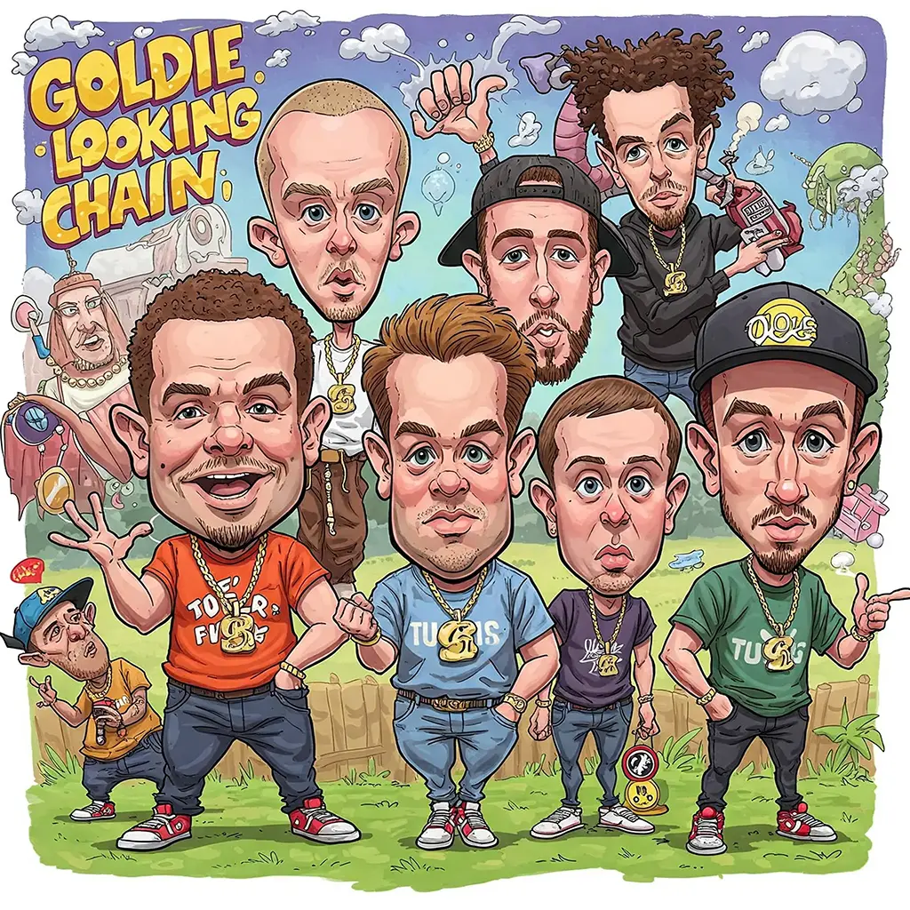
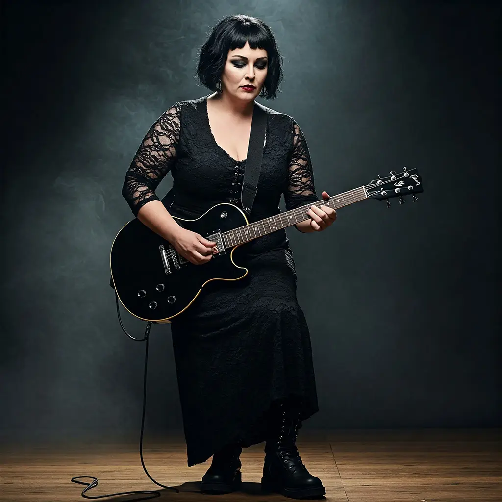

With Performances By...

Goldie Looking Chain
Newport's finest, Goldie Lookin Chain, are back! Original gangsters of Welsh hip-hop, expect hilarious rhymes, massive beats, and pure gold.
Stereophonics
Welsh rockers Stereophonics deliver anthemic indie rock. Distinctive vocals and powerful riffs have made them a stadium-filling favourite.

Cerys Matthews
From Catatonia's fiery frontwoman to solo star, Cerys Matthews' eclectic voice and captivating presence blend folk, world, and indie influences.

Ruth Jones
Ruth Jones: Soulful Welsh singer-songwriter. Her warm vocals and honest lyrics tell stories of life, love, and laughter. A voice that resonates.